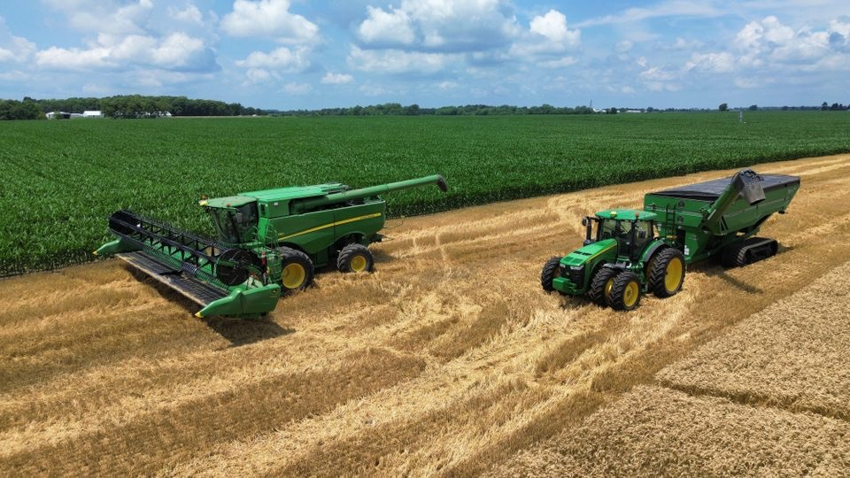

Project Overview
In agriculture soil samples are either taken as a part of a routine management plan or when some issue has been detected in an area which might be soil borne. The cost to take routine soil samples can be prohibtive and making an assumption of the nutrient levels and general soil properties can be worth the risk. The goal of this project is to develope models and methodology which would allow the prediction of common soil properties in an area with relatively few samples taken to train the models. This would allow land owners to have an approximation of their soil statistics and reduce the cost to gain this information as routine samples would not be needed, only samples to train the models on the given area.